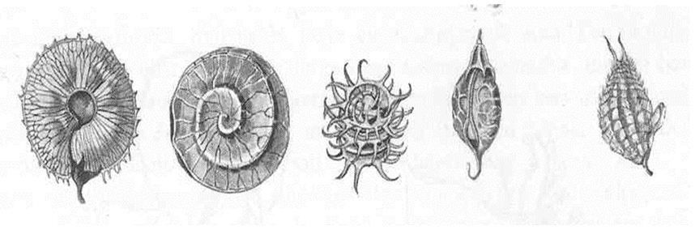
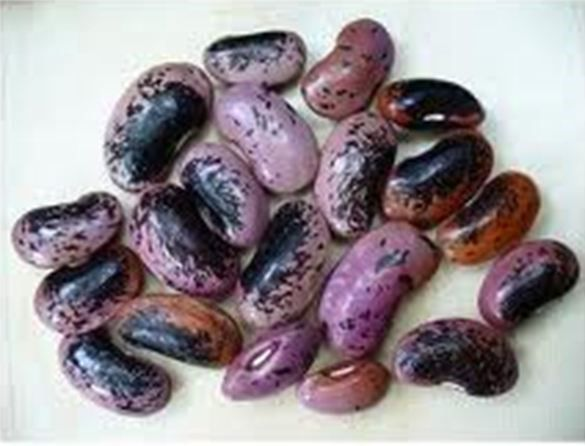
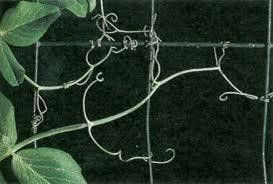
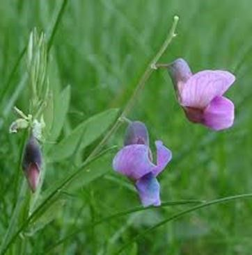
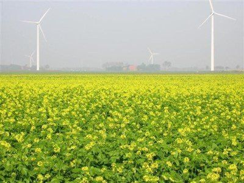
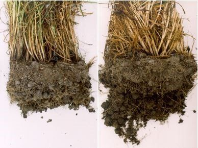
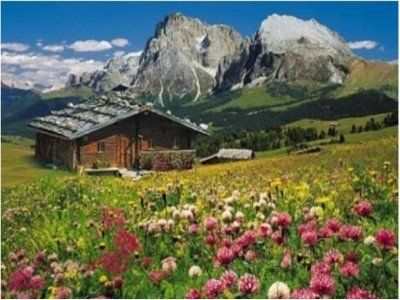
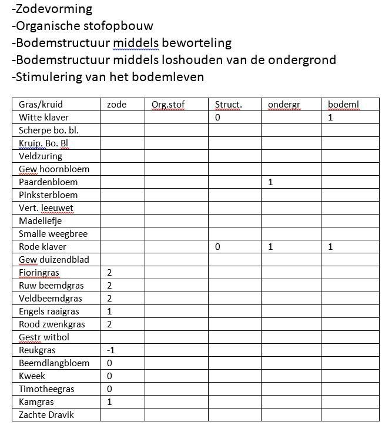

Bodem en plant
De gewassen hebben vaak een veel grotere invloed op de bodem dan de andere maatregelen die een boer neemt zoals bodembewerking en gebruik van mest en compost. Die invloed kan te maken hebben met de wijze van de teelt. Kan het zaaibed op een gunstige wijze aangelegd worden, is oogst onder gunstige omstandigheden mogelijk enzovoort. De invloed kan ook te maken hebben met het karakter van het gewas. Op dit laatste wordt bij enkele gewassen in het volgende ingegaan.
VlinderbloemigenStikstofrijke vlinderbloemigen zijn vaak slecht voor de bodemkwaliteit. In combinatie met koolstofrijke juist ideaal voor een goede bodem.
Vlinderbloemigen worden vaak zeer positief aangeduid. Ze staan aan de basis van bodemvruchtbaarheid wordt dan gezegd. Dat is ook wel zo, maar alleen in combinatie met een bron van makkelijk verteerbare koolstofrijke verbindingen. (Dit wordt uitgebreid toegelicht onder ‘Bodem en stoffen’, bij ‘stikstof en koolstof’). Vlinderbloemigen als monocultuur hebben een heel andere verhouding tot bodemvruchtbaarheid.In het volgende een korte kennismaking.
Wat eerst opvalt bij vlinderbloemigen zijn de zaden. Bij de vormen van de zaden denken we niet eerst aan planten maar veel meer aan dieren. In bijgaande figuur, samengesteld door Grohmann, zien we zaden die op het eerste gezicht afkomstig zijn van dieren.

Zaden van vlinderbloemigen (Grohmann, 1951). Van links naar rechts: Medicago radiata, Medicago orbitularis, Medicago litoralis, Melilotus officinalis en Trifolium resupinatum.

Ook de niervormige zaden van bonen herinneren eerder aan het dierenrijk dan an het plantenrijk

Aan de wortels zitten de wortelknolletjes waarin die bij doorsnijden roze van kleur zijn. Hierin wordt de luchtstikstof geboden. De stof die hierbij betrokken is, is rood van kleur en verwant aan de rode bloedlichaampjes.

De ranken die veel vlinderbloemigen kennen bewegen zich om houvast te krijgen. Beweging kennen we vooral bij dieren. Het kruidjeroermeniet is wat beweging betreft het meest opvallend.

De naam vlinderbloemigen geeft al aan dat bloemen op vlinders lijken.
Wat betreft de samenstelling valt het hoge eiwitgehalte van vlinderbloemigen op. Eiwit is een stof die naar dieren verwijst.Naar de bodem toe komen we tot het volgende:Bodemstructuur wordt vooral bepaald door de intensiteit van de beworteling. Vlinderbloemigen hebben over het algemeen weinig wortels. Het organische stofgehalte van de bodem wordt vooral bepaald door stikstofarme verbindingen zoals lignine. Vlinderbloemigen bevatten weinig lignine. Vlinderbloemigen leveren weinig plantenresten en die zijn door hun stikstofrijkdom snel afbreekbaar. Hiermee stimuleren ze het bodemleven op korte termijn en leveren stikstof voor de andere gewassen, maar doen zelf weinig aan de bodem. Luzerne wortelt diep, maar maakt daarbij de ondergrond niet los: de plant maakt gebruik van bestaande gangen, vooral regenwormgangen.Dat vlinderbloemigen van belang zijn voor de bodemkwaliteit komt omdat ze in directe combinatie met koolhydraatrijke gewassen meer kunnen dan beide afzonderlijk. De rol van gras/klaver staat beschreven in het onderdeel Bodem en stoffen onder ‘stikstof en koolstof’.
Kruisbloemigen
Kruisbloemigen hebben wel een diepgaande penwortel, maar verder weinig wortels om de bodemstructuur te verzorgen. Het loof doet dat ook niet. Beperking van bodemgebonden ziekten is vaak een belangrijke reden om voor kruisbloemigen te kiezen.
Grohmann (1951) beschrijft hoe de kruisbloemigen buitengewoon veel bloemen en zaden kunnen vormen. Het herderstasje kan 64000 zaden per plant in een seizoen produceren. Akkers van koolzaad kunnen zo geel zijn van alle bloemen, dat de gele kleur soms door de lucht wordt weerkaatst. De lucht wordt dan ook wat geel, wat van een afstand al te zien is. Tegenover het vermogen om heel sterk in bloem en zaad te gaan, staat het vermogen om een krachtige penwortel te vormen. De plant maakt de indruk de enorme gerichtheid op bloem en zaad te compenseren met een gerichtheid op de penwortel. Omhoog en omlaag; dat is een belangrijk gebaar van veel kruisbloemige groenbemesters. Graven we nu bijvoorbeeld een gele mosterd uit dan zien we dat de penwortel toch wel erg vaak een bestaande gang opzoekt en niet zelf een gang maakt. Verder zien we dat de zijwortels van de penwortel hele tere dunne worteltjes zijn die nauwelijks de grond doorwortelen. Er wordt van kruisbloemigen vaak gezegd dat ze belangrijk zijn voor de bodem vanwege de krachtige penwortel die een verdichte bodem kan losmaken. Bij nader onderzoek blijkt dit toch tegen te vallen. Kruisbloemigen zijn niet echt bodemverbeteraars. Ze vormen vooral massa boven de grond en veel minder onder de grond.

Gele mosterd in de Wieringermeer
Granen en grassenGranen en grassen zijn de basis voor een goede bodem. Veel wortels voor een goede structuur en veel organische stof voor onderhoud van het organische stofgehalte.
Kwamen we bij vlinderbloemigen en kruisbloemigen tot de conclusie dat de betekenis voor de bodem beperkt is, bij granen en grassen ligt dat heel anders. Ze maken massaal wortels en zijn in de bovengrond in staat om een goede bodemstructuur te bewerkstelligen. De granen en grassen verdienen extra aandacht. Laten we ze eens nader beschouwen.In grote delen van de aarde zijn grassen de belangrijkste plant. Het zijn ook de gebieden met de meest vruchtbare bodems. De Zwarte Aarden hebben tot grotere diepte een humusrijke laag en zijn diep doorwortelbaar. Grassen hebben deze grond zo vruchtbaar gemaakt. De gebieden waar de grassen groeien kenmerken zich door extreme omstandigheden. Langdurige droogte in de zomer en vaak strenge vorst in de winter. Verder is er vee dat de bovengrondse delen opeet. Planten kunnen onder deze omstandigheden alleen overleven door onder de grond een basis te vormen van waaruit ze kunnen uitlopen. Een intensieve beworteling is deze basis. Die intensieve beworteling is weer de basis voor voldoende organische stof in de grond.Grassen moeten bij de keuze van een groenbemesters steeds overwogen worden. De combinatie met klaver kan een extra gunstige rol voor de bodem betekenen. Onderzaai onder granen is een van de mogelijkheden.Granen behoren ook tot de familie van de grasachtigen, de gramineae. Ook zij hebben een intensief wortelstelsel dat diep de grond ingaat. Er zijn wel verschillen tussen de graansoorten. De beworteling bij zomergranen is aanzienlijk minder dan bij wintergraan. Vooral winterrogge kenmerkt zich door een intensief wortelstelsel, vooral ook in de bovengrond.

Intensief wortelstelsel onder rogge.
Literatuur: Grohmann, G., 1951. Die Pflanze T 2. Verlag Freies Geistesleben Stuttgart.
Literatuur: Grohmann, G., 1951. Die Pflanze T 2. Verlag Freies Geistesleben Stuttgart. Grasland / weilandIn alle gras moeten eigenlijk meerdere kruiden staan. Dat is goed voor de bodem en voor het vee.
Bij de kwaliteit van landbouwgewassen werd gesteld dat de veredelaar moet weten wat voedingskwaliteit is en gewassen moet ontwikkelen die een goede voedingskwaliteit hebben. De teler moet de teeltmaatregelen zo kiezen dat het gewas zich naar zijn eigen aard kan ontwikkelen. De veredelaar werkt mensgericht, de teler gewasgericht en daarmee indirect ook mensgericht.Bij grasland geldt een overeenkomstige situatie. De veredelaar van het vee moet inzicht hebben in de eigenschappen die vee moet hebben voor melk- of vleesproductie voor de mens. De veehouder die het gras beheert, moet het gras zodanig beheren dat het goed voedsel voor dit vee wordt. Dit betekent dat voor iedere veesoort (koe, paard, geit, schaap e.d.) er weer een ander beheer vereist is. Ook betekent dit dat het beheer op iedere bodem weer anders is.Een grasland bestaat uit gras en daarnaast kunnen er klaver en andere kruiden in staan. Klaver staat er voor de stikstofbinding, maar heeft ook een specifiek effect op de bodemkwaliteit (zie onder 2. Vlinderbloemigen). De andere kruiden staan er ongewild, vanwege de goede invloed op de voerkwaliteit of vanwege de invloed op de bodem. Veel bodems in Nederland zijn eenzijdig (zie ‘Bodems vrichtbaar maken’). Landbouw is geen natuur, maar cultuur. Dat wil zeggen dat de bodem gericht veranderd wordt richting de menselijke behoeften. Kruiden kunnen daar een rol inspelen. Op een recent ontgonnen heidegrond met een zeer lage pH-waarde horen andere kruiden om de bodem in de goede richting te sturen dan op een kalkrijke zavelgrond met weinig organische stof. Welke kruiden zijn dat? Waar liggen meerjarige proeven die laten zien hoe het moet? Hier is maar weinig over bekend. Kruiden moeten er altijd staan in grasland, maar wanneer hoge producties vereist zijn, zijn de mogelijkheden beperkter. Hoe is de situatie bij hoge producties? Vragen te over dus.
Grasland of weilandHet woord verwijst naar gras. In een grasland staat dus gras. In het bovenstaande werd al gezegd dat er in een grasland bedoeld voor veevoer ook kruiden moeten staan. Is het woord weiland niet beter dan grasland?

Bergweide in Zuid-Tirol (foto Jumbo Diset int.)
De planten in een weiland kunnen invloed op de bodem hebben. Ze hebben ook invloed op de ontwikkeling van het vee, van de gezondheid van het vee of de kwaliteit van de melk wanneer ze als veevoer worden gebruikt. De beoordeling van een weiland met betrekking tot de gezondheid van het vee is uitgewerkt door Wagenaar (2012).Naar analogie hiervan wordt hieronder geprobeerd een beoordeling van een weiland te geven richting onderhoud en verbetering van de bodemkwaliteit. Dit wordt gedaan voor de belangrijkste grassen en kruiden die nu in de Nederlandse weilanden voorkomen.Bij de grassen of kruiden wordt beoordeeld in welke mate ze invloed hebben op diverse bodemeigenschappen:
